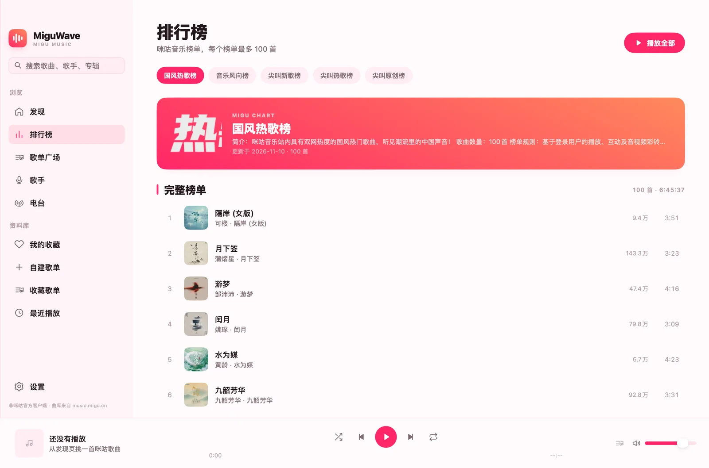
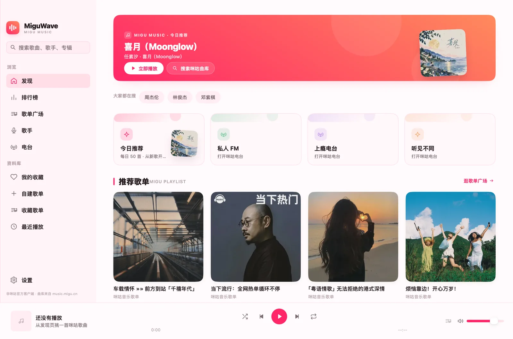

01 / 曲库浏览
从发现页出发，
一路听到排行榜。
今日推荐、推荐歌单、歌单广场、歌手与电台，再加上五份咪咕榜单。不用在网页之间来回切换。
- 发现
- 排行榜
- 歌单广场
- 歌手
- 电台

咪咕音乐 · 原生桌面客户端
发现、搜索、排行榜、歌词和播放控制，都在一个轻快的窗口里。用 Go 和 MyGo 构建，macOS 与 Windows 共用一套原生体验。

桌面体验
从曲库浏览到菜单栏控制，每个交互都围绕桌面场景重新想过。窗口可以收起，音乐不会断。
01 / 曲库浏览
今日推荐、推荐歌单、歌单广场、歌手与电台，再加上五份咪咕榜单。不用在网页之间来回切换。

02 / 常驻桌面
macOS 菜单栏与 Windows 系统托盘都能展开当前歌曲、歌词和播放控制。随时收起，也随时回来。
03 / 沉浸播放
LRC / MRC 逐字时间轴 · 点击歌词跳转播放
04 / 账号授权
令牌只写入本机私有文件，权限 0600。
05 / 本地资料库
收藏歌曲、收藏歌单、最近播放与自建歌单本地持久化。
界面预览
没有浏览器边框，没有多余标签页。只有咪咕曲库、你的账号和正在播放的音乐。
首次打开如提示无法验证开发者，请在 Finder 中右键应用并选择「打开」。查看安装说明
不是。miguwave 是第三方开源桌面客户端，接口来自咪咕网页端，可能随官方调整而失效。请使用自己的账号与会员权益。
免费曲目不需要登录即可直接播放。登录咪咕账号后，才能播放账号本身有权限的曲目。应用不提供绕过付费墙或下载导出的能力。
macOS 12 或更高版本，以及 Windows 10 1809+ / Windows 11。Windows 需要 WebView2 Runtime，Windows 11 已自带，旧系统可安装 Evergreen Runtime。
应用内登录使用一次性网页会话，关闭授权窗口或完成登录后会立即清除 Cookie；客户端不会读取、保存或回显咪咕账号密码。授权令牌只写入应用配置目录下的私有文件，权限为 0600。
当前公开构建使用 ad-hoc 签名，尚未经过 Apple 公证。首次启动时，在 Finder 中右键 miguwave 并选择「打开」。如果系统提示应用已损坏，可在终端执行 xattr -dr com.apple.quarantine /Applications/miguwave.app，然后重新打开。
这是桌面端默认行为：关闭主窗口会收起到菜单栏或系统托盘并继续播放。macOS 用 ⌘Q、Windows 用 Ctrl+Q 才会完全退出，也可以在设置中改成关闭即退出。